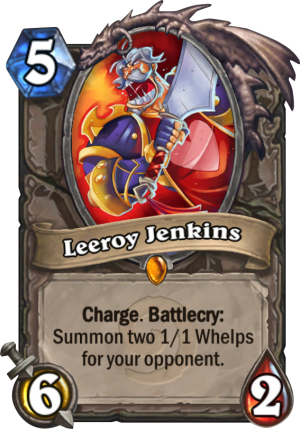
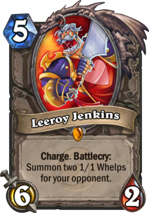

Pirate Warrior is very controversial because it has the ability to kill opponent’s very quickly and many view unfairly. This deck, however, can run out of steam and can be hurt with tech cards such as Golakka Crawler and Weapon removal like Acidic Swamp Ooze, Gluttonous Ooze, or Harrison Jones. One of the big weaknesses of this deck is that it contains no card draw, so if it draws a slow hand or a handful of weapons it can just lose on the spot.
The deck took a pretty big hit with the nerf to Fiery War Axe, but Prince Keleseth seemed to soften the blow. Pirate Warrior isn’t as strong as it once was, but with the addition of some new tools in Kobolds and Catacombs it might be in a better spot than it was in the Frozen Throne meta.
WHY IS PATCHES THE PIRATE GOOD?I see this question a lot so I’d like to address it. Patches is a minion that lands on your board for free the majority of the time unless you get him in your first draw or mulligan. Think of it as starting the game off with a 1/1 minion already on the board, and a deck that has 29 cards in it. A thinner deck enables you to draw more reliably. Also, starting off with a 1/1 minion on your board for free gives you a pretty nice advantage. Patches is also a Pirate, which in a Pirate synergistic deck means you’ll be able to enable cards like Bloodsail Cultist more easily on curve.
Aggro decks test your ability to understand how to play your hand. You’ll have to learn how to judge when it’s time to go all-in, and when you should trade. If you are against the ropes, then it’s best to just throw it all on the board and see if they can answer it. If they have the answers, well you were probably going to lose anyway. On the other hand, you’ll win some games you had no business winning because they didn’t have the cards to stop you.
 
